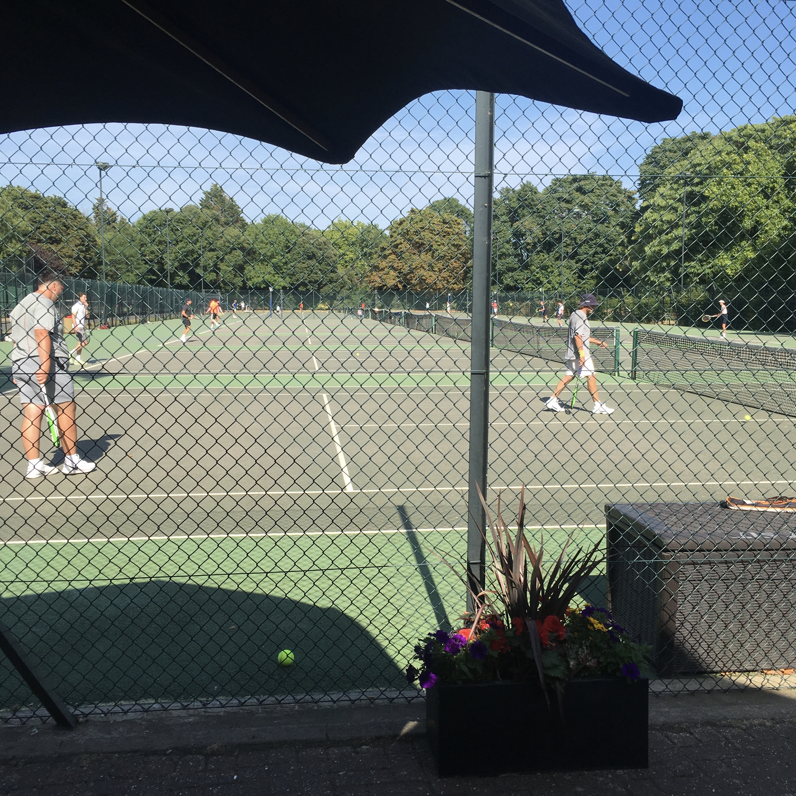
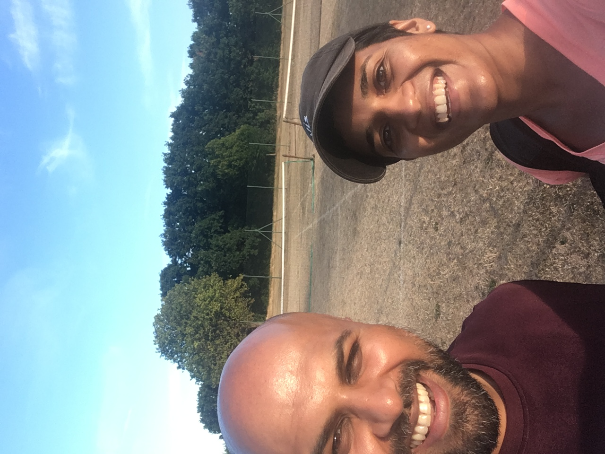

i'm designing a book of pictures i made in india last month. really, i'm hellbent on making this thing *now* though i have other course work i should be sorting out. i spent six agonizing hours today arranging, re-arranging, and sequencing images. i'm making decisions about page formats and crops and narrative arcs that i can't back up with anything other than the probiotics in my guts. i'm being incredibly precious about each round of edits; i've barely made it past the first. i can't decide who my audience is — mom, dad, extended family, strangers, faculty critics? i can't decide what to communicate (there's too much), and then, how? i can't decide if i need any supporting text, and in which language(s)?
took a break to sweep the kitchen floor and realized: actually, I'M the audience. at least for this iteration. am no longer in agony. gonna go have some fun with this onslaught of imagery tomorrow and then hit print.
wilbur cross weather balloon
24 nov 2022
67 days, 9 weeks, 245 miles, 2 midterms, 4 problem sets — all ways to mark the same amount of time (that is, the time between last post and now).
the prompt for an assignment in one of my front-end classes a few weeks ago was to build a clock on the web using html/css/js. i happened to be in india when the prompt was disseminated. i was thinking a lot about the magic of international travel that week, about how it's more or less on the same level of magic as time travel.
i made a clock that responds to both time and weather conditions in a very specific location: the wilbur cross high school tennis courts in new haven, where tennis club meets more often than not (although that might change now with the impending winter weather, plus the long-awaited opening of edgewood park courts!!). i used the openweather api to pull current weather data. fun story: at first, i was making api calls every two seconds (why?) and maxed out my free account limit and crashed the whole site the day that it was featured in a 24-hour installation at the art school, lol. that's life — time crashing down — i guess.
i tucked away all sorts of features . . . visual changes in response to light v night, sunset v sun up, wind, rain. you gotta keep coming back to catch it all (that's how they get you). most satisfying part of the project was writing a series of demo functions to show off all the goodies. view source if you want to catch a glimpse.
one little-big vision i have is to write a bot that takes screenshots of the site at one or two randomly selected moments of the day and dumps them into an archival gallery that lives in some corner of the weather balloon website. maybe where the parachute goes? i also dream about making this into another chrome extension. maybe a full-on screensaver? (but my experiences with building those have been GNARLY; i'm not sure i have it in me right now to go down that path. open to your tips!)
weather.gov kid's corner just taught me that government-owned weather balloons are shot up twice a day, so maybe that's the perfect rhythm.
a website is just a collection of files
18 sept 2022
or, it can be a collection of points in a game.
i threw together this website on friday morning in response to an html exercise for class. actually, what you're looking at here is the source code, which i find to be so much more beautiful than the user-facing website itself.
the <details> html tag is interesting . . .
as a tool to unfurl information. it got me thinking about how an unfurling interaction could be used as a narrative tool or a plot device on a website.
and, obviously, i've got tennis on my mind always . . .
which got me thinking about how i might use the <details> tag to unfurl the drama of a u.s. open final.
i "transcribed" the women's singles match between ons jabeur and iga swiatek into html, by tucking each point into a nested <details> tag. the user can only see the result of a single point by twirling the arrow to reveal the next one. kind of a point-by-point, no-audio, no-visual view of the match, lol.
the browser view of this is pretty dull. the code seems to do a slightly better job of expressing the sweeping physical and psychological arc the most thrilling tennis matches take, the way the outcome of a first point or first game can somehow predict the trajectory of the entire performance. or the way the start of a second set is almost a chance for a re-set for the player who just got crushed in the first.
detail view of the source code. i like how the comments also tell a story.
i ran out of time and stopped transcribing at the top of the second set, but i'm actually thinking about finishing this up and maybe figuring out a way to display the code structure in the browser (and/or adjacent to the user-view). maybe there's a timing function involved that could add the nested elements at the rate that those points were actually played? idk, what do you think? (as a side note, i was watching the match at 2.5x speed to record the points, and wow listening to the commentators combined with the sound of the racquets at that rate was nuts.)
on form
12 sept 2022
i have a friend whose mother was some combination of a very-competitive-and-very-good cross-country skier in her youth. i was handed down a piece of advice from her, when i was training for some long race, that good form — precise, well-crafted form — can carry you forward even when you're dead-beat exhausted. today, she's older, and her body is weaker, yet apparently she is able to continue to out-ski others recreationally because of her strong, established form.
can good form carry us as tired designers, too?
state change (#2)
18 august 2022
screenshot of this website on 18 august 2022. a book cover i've often enjoyed and am now thinking about excessively.
dreadmill
13 august 2022 03 february 2016
[it was a gnarly winter morning. i remember surrendering to the gym to get a run in. i came home; i wrote.]
thump thump thump thump thump thumb thumb thumb thump thump thump thump thumb htump thump thump thump thump thump thump thump thump thumpt humpt humptuhpt thump thump thump thum pthump thump thump thump tump thump thump thumpthmp thumpthump thump thump thump thump thump thump thump thump thump thump thupmt thu thump thump thump thump thump thump thump thuomp thum pthum pthump thump thump thump thump thump thump thump htump thump thump thump thump thump thump thump thump thuomp thump thump thump thupmp tjip thump thump thump thump thu tumpt thimp thimp thump thump thump thum pthump thump thump thump thump thump thump thump thump thump thump thump rhmp thum prhmp rhmp rhmp rhmp rhmp rhmp rhmp rhmp rhmpr hmp rmph rmph rmpj rmph rmp h rmph rmp h mpr rmph rmph rmph rmp h rmp hrmph rmph rmph rmph rmph rmphr mphr rmph rmph mprh rhmp rhmp rhmp rhmp rhmp rhmprh rhmp rhmp rhmprhmp hrmprhmp rhmprhmp rhmp rhmp rhmp rhmpr rhmp rhm rhm rhm rhm rhm rhm rhm rhm rhm rhm rhm rhm rhrm rhrm rhm rhm rhm rhrm rhm rhm rhm rhm rhrm rhm rhm rhm rh mrhm rhm rhm rhm rhm rhm rhm rhm rhm rhm rhm rhm rhm rhm rhm rhm rhm rhm rhm rhm rhm rhm rhm rhm rhm rhm rhm rhm rhm rhm rhm rhm rhm rhm rhm rhm rhm rhm rhm rhm rhm rhm rhm rhm rhm rhm rhm rhm rhm rhm rhm rhmm rhmm rhmm rhmm rhmm rhmm rhmm rhm rhmm rhmm rhmm rhmm rhmmr hrmm rhmm rhmm rhmm rhmm rhmm rmm rhmm rhmm rhmm rhm rmm rmm rmm rmm rmmn rmmnm rmmn rmmn rmmn rmmn rmmn rmmn rn rmmn rmmnm rmmn rmmn rmmn rmmn rmmn rmmn rmmn rmmn rmmn rmm n rmmn rmm n rmmn rmmn rmmn rmm n rmn rmmn rmmn rmmn rmmn rmmn rmmn rmmn rmmn mrmmn rmmn rmmn rmmn rmmn rmmn rmmn rmmn rmmn rmmn rmn rmn rmn rmn rm nr m nr rm n rmn rm rmn rmn rmn rmn rmn rmn rmn rmn rhm rhm rhm rhm rhm rhm rhm rhm rhm rhm rhm rhm rhm rhm rhm rhm rhm rhm rhm rhm rhm rhm rhm rhm rhm rhm rhm rhm rhm rhm rhm rhm rhm rhm rhm rhm rhm rhm rhm rhm rhm rhm rhm rhm rhm rhm rh rhm rhm rhm rhm rhm rhm rhm rhm rh rhm rhm rhm rhm rhm rh rhm rhm rhm rhm rhm rhm rhm rhm rhm rhm rhm rhm rhm rhm rhm rhm rhm rhm rhm rhm rhm rhm rhm rhm rhm rhm rhm rhm rhm rhm rhm rhm rhm rhm rhm rh rhm rhm rhm rhm rh rhm rhm rhm rhm rhm rhm rhm rhm rhm rhm rhmr rhm rhm rhm rhm rhm rhm rhm rhm rhm rhm rhm rhm rhm rhm rhm rhm rhm rhm rhm rhm rhm rhm rhm rhm rhm rhm rhm rhm rhm rhm rhm rhm rhm rhm rhm rhm rhm rhm rhm rhm rhm rhm rhm rhm rhm rhm rhm rhm rhm rhm rhm rhm rhm rhm rhm rhn rhm rhm rhm rhm rhm rhm rhm rhm rhm rhm rhm rhm rhm rhm rhm rhm rhm rhm rhm rhm rhm rhm rhm rhm rhm rhm rhm rhm rhm rhm rhm rhm rhm rhm rhm rhm rhm rhm rhm rhm rhm rhm rhm rhm rhm rhm rhm rhm rhm rhm rhm rhm rhm rhm rhm rhm rhm rhm rhm rh rh m rh m rhm rhm rhm rhm rhm rhm rhm rhm rhm rhm rhm rhm rhm rhm rhm rhm rhm rhm rhm rhm rhm rhm rhm rhm rhm rhm rhm rhm rhm rhm rhm rhm rhrm rhm rhm rhr mrhrmhrmrhmrhmrhmrhmrhmrhmrhmrhmrhmrhmrmhrmmhrmrhmrjhmrjrrmhrmhrmhrmhrmhrmhrmhrmhrmhrmhrmhrmhrmhrmhrmrmhrmhrmhrmhrmhrmhmrmhrmhrmhrmhrmhrmhrmhrmhrmhrmhrmhrmhrmhrmhrmhrmhmrmhrmhrmhrmhrmhrmhrmhrmhrmhrmrhmrhmrhhrmhrmhmrhrmhrmrhmrhmhrmhrmhrmrmhrmrhrmhrmhrmhrmhrmhrmhrmhrmhrmhrmhrmhrmhrmhrmhrmhrmhrmhrmrhmrhmrhmrhmrhmrhmrhmrhmrhmrhmrhrmhrmrhmrhrmrhrmrhmrhrmrhrmrhmrhmrhmrhmrhmrhmrhmrhmrhmrhmrhmrhmrhmrhmrhmrhmrhmrhmrhmrhmrhmhrmrhrmhrmhrmhrmrhmrhrmh rmhr mhr mhrmh rmhr rmh rmh rmh rmh rmh rmh rmh rhm rhm rhm rhm rhm rhm rhm rhm rhm rhm rhm rhm rhm rhm rhm rhm rhm rhm rhm rhm rhm rhm rhm rhm rhm rhm rhm rhm rhm rhm rhm rhm rhm rhm rh rhm rhm rhm rum rum rum rum rum rum rum rum rum rum rum rum rum rum rum rum rum rum rum rum rum rum rum rum rum rum rum rum rum rum rum rum rum rum rum rum rum rum rum rum rum rum ru rum rum rum rum rum rum rum rum rum rum rum runrun run run run run runr run run run run run run run run run run run run run run runr run r runr runr runr runr runr runr runr runr runr runr rn runr run r runr run r runr runr unr runr runr runr runr runr runr runr runr runr runr runr runr runr runr run r runr runr runr runr runr runrn runr runr runr runr runr runr runrr runr runrr runr runr runr runr runr runr runr runr runr runrr runr runr runr runr runr runr runr runr runr runr runr runr runr runr runr u=runr runr runr runr runr runr runr runr runr runr runr runr runr runr runr runr runr runr runr runr runr runr runr runr runr runr runr runr runr runr runr runr runr runr run r runr runr runr runr runr runr runr runr runr runr runr runr runr runr runr runr runr rnur runr runr runr runr runr runr runr runrn runr runr runr runr runr runr runr rn runr runr runr runr runr runr runr
i used to be a prolific tweeter (@neetadotworks, formerly @npfluter). in 2016 (not unrelatedly, the year i first became full-time employed), i chose not to be quite so public with my frustrations. but, my reliance on twitter as a realtime publishing tool had trained me to think my thoughts in half-formed sentences and underbaked musings. likes on my posts from my 3.5 followers were too gratifying, slightly toxic, and even productive for my design practice at the time. i “left” twitter but i couldn’t stop thinking in tweets, so i started littering my notebooks with them instead.
somehow, around this time, don’t ask me how, i also realized that muji’s a6 gridded notebooks contained precisely 560 squares per page. 560 squares divides neatly into four 140-square sections. that magical, addictive number!! so began a seven-years-and-counting practice of demarcating these now obsolete character limits by hand and spending the ensuing 1.75 years religiously filling them in, until it was time to repeat the process. time has passed, twitter has increased its character limitation, and here i am still counting out grid squares.
with the completion of notebook #4 today, i spent some time looking through my past books. in their own inconsistent frequency, the tweets manage to mark time without missing a beat. lol, if you think i can’t crunch numbers because i’m an artist, followed by, note to self: learn how to crunch numbers. some tweets are emotional fireworks erupting in narrative arcs on the page: agnes martin is my hero, then dreams of miso soup breakfasts are a bit too ambitious, but what else are dreams for!, then go ahead and be a crazy person. some tweets are pure nonsense (parsley?). many reveal my preoccupations over time (tired of society telling me what design is); still others distill my deepest, and most quotidian, fears (scared to share anything that isn’t fully formed); and even more scream my dreams (READING GROUP IS SUBVERTING CAPITALISM!). others are borderline lyrical (a believer’s building) or brutally honest (money motivates) or self-consciously questioning (is this whole thing just a capitalist appropriation of my smallest thoughts? (thanks, jenny odell)).
unpublishing my tweets is an act of resistance against the churn and reach of the algorithm, but it is also fundamentally a journaling practice. like my long-form journals, it is a record of my self in flux. i can look back and recall memories and events and struggles and triumphs. on one hand, these books read like the unedited diary of an emotionally repressed child, but on the other, they are a distilled archaeological record of my process — one that is just maybe worth keeping up.
at any rate, i still find personal satisfaction in this weird ongoing practice, so i’ll keep going for the pure narcissistic pleasure of thinking my thoughts are worth recording.
another part of this project i enjoy is finding new ways to give the central axis (these a6 notebooks) new forms. in 2020, i recycled my tweets into a website, one that i hope to maintain and tend to, soon. i’ve imagined these as single-volume books and zines and stickers and temporary tattoos. maybe one day i’ll get to all those. (tweet: is this project expired? is it dead? is it rotting? am i in love with an idea? am i too much of a coward to kill it?) (next tweet: is this what they call “killing your darlings”?)
*
today after work, i sat on the porch and spent an hour drawing little red squares by hand to set up volume five — and let me tell you, this activity felt equal parts therapeutic, nuts, and necessary. i remind myself that some artists make a career out of drawing squares on a page. i’m just trying to stay alive.
notes from the underground
19 july 2022
spotted at the exit of golders green station, north end road, london.
breaking news
18 july 2022
state change (#1)
18 july 2022
this is actually the second time i've updated the look of my secret blog, but i naturally started indexing these updates at 0, not 1.
screenshot of this website on 17 july 2022. i made some small css updates inspired by the previous post. hopefully visual updates are to come with more frequency soon.
the last grass courts in london
17 july 2022
dear readers: cheers from across the pond!
i arrived in the uk on friday for a short summer school on the topic of labour in british art and culture. more on that another time . . . the course starts tomorrow!
there's a heatwave coming for europe tomorrow, as well. london seems to be panicking about this development, though the temperature won't be any higher than 100F or so. i'm happy for a reason to remain in a seated position indoors for a bit because i played so much tennis this weekend that i can't really move right now.
yes, i traveled to london with my tennis racquet! mostly because a new haven tennis club friend (kevin), and my brother (tejash), did too! i felt disproportionately cool walking through heathrow with my racquet bag, like the pro player i absolutely am not. the main goal arriving here, aside from playing as much tennis as possible, was to find some grass courts to hit on. with wimbledon wrapping up about a week ago, grass season is still in the air, and where better to get a taste than in the homeland of the world's greatest sport? i spent hours and hours of my covid quarantine the other week searching for public grass tennis courts in and around london. the search was suprisingly difficult and convoluted! finally arriving in this country also added new intrigue to the search. i thought it would be fun to nerd out and document my journey here.
because grass courts require regular and meticulous maintenance, and have only a short play season, most are locked up behind tennis clubs with hefty membership fees. i thought england might be different because, again, grass courts were born here — and who knows, maybe it is different outside of the confines of the city. but within the greater london area, i could only find two mentions online of public pay-to-play grass tennis courts, and the existence of these was questionable because i couldn't find any online booking services that listed the hours explicitly for the grass courts (meanwhile, hard courts, and hard court booking timetables, abound).
i even resorted to a brute force search on google maps with the satellite layer turned on, to try to spot court-sized expanses of lawn in the parks where i had found mentions of grass courts. insane.
localtennisleagues.com mentioned grass courts at golders hill park that are open april–september on weekends and holidays. but, the booking system only listed hard courts! meanwhile, google satellite images were inconclusive . . . those fields could be courts in the off-season, but they could also just be fields of grass. the lack of any legible court lines makes it even harder to tell what these fields are for.
(an aside: in london, public courts are all listed in online booking systems, where you can book slots for £10-12 / hr. booking confirmation includes a freshly generated pin number used to unlock the court gate. while the expense of booking two hour slots on a weekly basis adds up, it also results in courts that are in excellent shape (because they are locked) with guaranteed availability (because you booked in advance). that said, i think it is still important for the city to provide free courts for the public, which i haven't yet found).
but back to our main plot. i had discovered two possible but unconfirmed grass court sites: golders hill park at the north end of hampstead heath, and eltham park south, way out in a residential suburb southeast of the city. because golders hill is located in hampstead heath, an expansive woodsy park worth a visit itself, i decided that we should try there first. saturday morning kevin and i took the underground's northern line from elephant & castle straight to golders green (about 45 minutes one way). the tennis court area was elevated from the street level, on a slight slope. as we approached, we first caught sight of nets. my heart skipped a beat! maybe those nets were on grass! as we got closer, we quickly saw those nets belonged to four hard surface courts. sad! these were surrounded by a few fields of grass (as seen in the satellite image), and we quickly walked around to make super sure none of those fields were actually tennis courts in disguise. sadly, they weren't. what a disappointment!
at this point, it was not even 8 a.m. and the hard courts were empty. we decided to book a one-hour slot for 8:30, since we came all the way. it was really fun!! i hadn't hit seriously in many weeks between my piriformis muscle issues and covid — i've really missed the game. i got to play some serious singles with kevin because tejash had severely overslept, lol. kevin crushed me: 3-6 3-6 3-3 (we had to leave mid-game). as an added bonus, no one had booked the slot after ours, so we actually played for two hours! if you find yourself booking courts in london, i'd recommend trying to choose open slots with this strategy.
new haven tennis club just went international! that's kevin on the left. the hard surface courts here are . . . bouncier than the typical american type. it's almost like playground material?check out these cute alcoves that come with each of the courts at golders hill park. you can hide from the sun and cool off in between sets.we got lost in the woods at hampstead heath after our match. we were taking the scenic route to the overground at the south end of the park, to get to a delicious lunch at e5 bakehouse (tejash woke up in time for that part).
after lunch and an overwhelming stop at the british museum, tejash and i found ourselves smelling the roses in queen mary's rose garden in regent's park. i never knew there were so many roses that could smell so different! while we were wandering around the garden, we could literally hear the beautiful pop! of tennis balls in play, so we decided to hop over to the regent's park courts that we had seen on the park map. let me tell you, the sheer QUANTITY of tennis courts was simply overwhelming . . . particularly after spending so much of my week scanning satellite images for literal grass, ha ha.

the sheer number of courts at regent's park! twelve in a row! as far as the eye can see! all public pay-to-play! and i kid you not, the name of these courts? "will to win regent's park tennis centre." LOL.
this finally brings us to the climax of my hunt for grass courts: saturday evening, less than 24 hours until tejash leaves, and only one possibility left, eltham park south. here is everything i knew so far: localtennisleagues.com claimed that this park has EIGHT grass courts in the summer. royalgreenwich.gov.uk mentioned grass tennis courts here in the summer as well. meanwhile, the booking site did not list any availability outside of the four hard courts at eltham park south, and the satellite imagery only offered more ambiguous and unmarked fields. so, we hopped in an uber to our destination.
aerial view of eltham park south. do those look like potential grass courts to you?
as we climbed out of the car at eltham park, we quickly saw nets on the horizon. my heart skippped a beat (again). as we got a little closer, though, it was evident that those nets belonged to the four hard courts that we already knew existed. but, there were large open fields surrounding this area that were too large to scan with a glance from afar. we walked closer.
as we passed the hard courts, we approached another gated area, the length of eight adjacent courts. my heart skipped many beats!! maybe this was it. and there came, into our line of vision, the sight of nets! on GRASS! in a jumble of excitement, we shuffled over to the side of the gated area (i was too tired at this point in the day to run), only to discover that the door to this area was wide open. there were no locks, because there was no booking these — the courts were abandoned. we made our way inside, closer and closer to the courts with nets, my heart still pounding. there were lines on the ground! visible, white court lines! the grass was dead, the ground was lumpy, but there were lines and a net and the surface was flat enough. we dropped our bags and played!
approaching the grass courts with nets, jittery with excitement!
while the unmaintained surface made it difficult to keep the ball in play, we still had so much fun finally trying to hit on grass! the balls would hit divets in the dirt and bounce in unexpected ways. i could barely chase the balls after my morning singles match, plus traversing london on foot. tejash's serves were speedier than usual! it was exciting to imagine what the space must have been like when it was properly maintained and fully functional. i was also pretty sad reflecting on how abandoned and uncared for these courts clearly were. you'd think the english would place more effort into preserving what really feels like the last public grass tennis courts in all of london. travelling to this suburban outpost to play on grass shouldn't feel archaeological.

requisite selfie in front of the last grass tennis courts in london. do you see the lines??
as we were taking post-play selfies, we noticed that the tennis posts holding up the nets were really . . . rusty. and old. and HEAVY. on further inspection, we found the name of the company that produced them. the material and the quality of the lettering (B. HIRST & SONS) made me think this was made of iron. how old was this place?
foot of the tennis post. counterclockwise, starting from the left side, you can make out the words: HALIFAX ENG PATENT NE PLUS ULTRA B HIRST & SONS.
then, on our way out of the park, we noticed an actual large metal plaque describing the park's historical roots . . . including a small map that listed the grass courts!! the area delineated for the grass courts was WAY bigger in relation to the hard courts than what actually exists as functional play space today. these grass courts were becoming more real to me by the minute!
informational plaque on the history of eltham park south.do you see the size of those grass courts on the map??
upon further investigation this evening, i've discovered that those tennis posts were in fact manufactured by the engineering company b. hirst and sons of halifax, england, established in 1846! they produced sporting equipment and tennis posts in the early 1900s. everything i read on this site checked out with the writing i had seen on the posts in eltham, including the "ne plus ultra" line that is the company's motto. this website on british industrial history has some excellent archival advertisements for b. hirst and sons' lawn tennis posts, produced in 1922! did we just play on century-old courts? (also, i guess they are actually made of steel).
this bit was at the top of the tennis post. you can make out almost none of the letters, but i do think the top area reads, "The Ladye Winder Patent," based on the legible letters and the contents of the following ad. we wanted to take a selfie with this historical post, lol.
after a local indian meal in eltham (yum), we made the hour-long journey back to central london, and made it into bed close to midnight . . . only to get up six hours later to travel an hour north for a last hard court match at golders hill again, ha! one of the nice things about booking courts is that on a fully-booked day like this sunny sunday, you really can only play for the alloted hour. thank god.
after three rounds of tennis in 24 hours, my wrist hurts, my back hurts, my shins hurt, and even my butt hurts, but i can't wait to play some more early morning games this week. nice excuse to visit more of these beautiful english parks, too!
kevin, ready to hit?
a love letter
29 may 2022
there exist very few sports as graceful and as beautiful as tennis. nor a sport as pressurized. the outcome of a point is so tied to an individual motion, the coordination between body and mind, the timing, the power, the precise point of impact at an even more precise moment of the ball's parabolic fall down to earth. a moment too late, and your serve falls face-first into the net; a moment too soon and your serve soars long. a slight slant to your grip on the racket can send ball after ball into the net — adjust it a fraction of an inch higher and you're gold.
but really, behind every measured adjustment prior to the moment of impact lies the higher calling of consistency: the assurance of bodily knowledge built up over time, drill after drill, again and again and again and again.
another day, another train
23 may 2022
i'm riding the metro-north, heading south. en route to grand central, then to new brunswick. ++ milford is next.
i'm thinking about pace and tempo. in relation to running, sure, always. i want to be faster, stronger, more reliable. some runs i'll try to embody a pace, faster or slower. try to teach my body how it feels to sustain a rhythm, a speed.
++ the next station is: milford.
what it feels like to —
++ this station is milford. the next station is: stratford.
what it feels like to maintain a pace that is just beyond reach. the push and the pull between the breath and the body and the mind.
then there's tempo: that cyclical, rhythmic type of run, caught between pushing the pace and pushing the brakes. maintaining pace and interrupting with new tempos is the bread and butter of this summer's speedwork. one does hope.
some questions to consider:
at what pace can i sustain myself in running at great length?
how often should i interject tempo-based work into my running schedule?
at what pace does running feel like a break? like work?
++ this station is stratford.
at what point does tempo-based work break me down rather than build me up?—
++ the next station is: bridgeport.
how important is it to schedule periods of intentionally paced work and strategically timed tempo work into my running practice?
++ this station is bridgeport.
now, re-read those questions, replacing—
++ this station is bridgeport. the next station is: fairfield metro.
—replacing the word 'running' with the word 'studio.'
++ this is the train to grand central. the next station is: fairfield metro.
accidental iphone photo dated may 1, 2022accidental iphone photo dated july 17, 2022accidental iphone photo dated september 18, 2022accidental iphone photo dated november 8, 2022
retinas, residue, and billboards
29 april 2022
this morning i was at the opthalmologist getting my eyeballs throroughly inspected. about an hour into residents upon residents poking at my numbed eyes, dr. n— finally came into the room to begin the official procedures. she flitted between my eyes and the computer at my elbow, furiously typing notes as she explained my organs to me. upon discovering i am a graphic designer, dr. n— thought i might be interested in the interface she was using to diagram her findings. i put my glasses on and leaned towards the screen. i swear to god, it looked like dr. n— was using microsoft paint to document her world-class retinal specialist knowledge about my eyes. MICROSOFT PAINT. complete with a rgb swatch-only color palette and spray paint tool. i thought for sure the combination of dilation and numbing drops must be severely disturbing my vision. but no, there she sat awkwardly using the mouse to draw rudimentary fuschia lines and cyan circles to indicate where my retina is torn and which areas we need to monitor. apparently, this software is called 'epic kaleidoscope' (apt), and this is nothing less than the industry standard for opthalmology medical records. i wish i had taken a picture! complex information systems, like medical records, and american tax documents, have always fascinated me, despite their seemingly boring costumes. what a crazy design question to try to answer, or make more transparent, or more functional. or, in the case of dr. n—'s epic software, more amenable to the types of information those records need to hold.
if you're in or around new haven tomorrow, there's a quick exhibition called 'billboards' from 2-4 pm in the basement of green hall, downtown. my 'software for the people' class is showcasing our final projects, websites that respond to the following prompt: Make a website that serves as a billboard for a community of people that you consider yourself a part of. Design and build a site that collects and displays user submissions. Check out this SUPER AWESOME POSTER-WEBSITE by first-year jisung park!!
shrink and grow the width of your browser window to reveal the content on the billboards exhibition poster-website.
we styled the site collaboratively, on glitch, each student setting the css for their assigned grid area. all of our dot styles come together at the top of the page to form the title of the show. we've looked at so many interesting websites together in this class, and this one definitely takes the cake.
my billboard project is a browser extension called #GabbottQuotes. you can downlaod the zipped files here, with a readme containing instructions on how to install the extension in chrome and miscrosoft edge! (please tell me what you think if you get this installed!) (sorry this doesn't work for safari.)
my dear, dear friend gabby abbott says the most amazing, crazy, hilarious things. we used to work together, and i used to write them down. when i moved away, our friends started a group text thread so they could keep me updated on the beautiful things gabby continued to say. i've diligently been transcribing these #gabbottquotes into a google sheet, hoping one day to make a book of them, or a screensaver! this project felt like an opportunity to finally bring her words to life. i included a little submission link at the bottom of the page for friends of gabbott to directly upload her words, too.
ha ha. there's 120 more where these came from!! get yourself the extension for endless laughs.
thank you, gabby, for allowing me to bring your words and spirit into the classroom these last couple of weeks!
live from the riso room
23 april 2022
(not actually live as it's 10:54 pm and i am typing this from my bed, but the sentiment is an appropriate level of exciting, don't you think?)
solidarity to all the grad students pushing for better working conditions here at yale. come support them at the rally wednesday afternoon if you're in town! we'll be blitzing campus with these beauties on monday . . . thanks to a happy accident / human color separation error, i produced 2x more than i had planned to (LOL).
check out that sweet, sweet registration
thinking about graphic output
19 april 2022
the great reminder of today, from the printshop as most great reminders are now, is that the notion of semester-time is a total construct. work that needs to be made will be made, and at its own pace (another idea i want to talk to you about in a forthcoming post). whether this work will be made in time (which, again, time isn't real) for 'final' 'critique' is less certain, but helpfully ambitious.
printmaking class today took a welcome field trip to the art & architecture library's special collections to look at book forms and print portfolios related to public address — a concept we are making work around ourselves (my prints are in support of the grad worker union here at yale. if you're in new haven, come out to the 'union yes' rally next wednesday!).
we looked at so many marvelous prints!!!
in particular, there was a very large portfolio of works by the artist duo sonnenzimmer. they started out making client work, poster advertisements for music performances and things of that nature. they still do mostly this type of work, it seems, but have also expanded to others types of creative, purely artistic acts. their work is so inventive and varied, i found it difficult to believe it was all produced by two people. on a technical level, their screenprinting is MASTERFUL. it reads like trickery, the way they achieve dynamic color combinations and incredibly precise overprinting with the use of just two screens. their work feels improvisatory, but it most certainly is not, or at least not fully — because they work for clients, and are paid to create posters, they are beholden to the traditional designer-client relationship (i.e. the client approves the concept and form in advance). also, the sheer volume of their graphic output was inspiring as all hell. they recently published this 1,000 page archive of their work, and it was really something else to look at the reproductions in this tome alongside the actual edition. one of my favorite moments was looking at this piece, which our instructor described as belonging to 'the grand tradition of getting away with hobo' LMAO. (hobo is the typeface.) joyous!
a couple of the other phenomenal portfolios we discovered together: one titled 'wellspring,' centered around water rights, by the justseeds artist collective and a collection of posters that came out of occuprint during the occupy wall street movement. the designer-organizer in me was floored by the immediacy of the political prints and the graphic legacies a lot of artists tapped into. for instance, this phenomenal poster / gif by artist josh macphee that pays homage to the prints that came out of the student protests in 1960s paris, and the ateliers populaire they organized. coincidentally, just touched on these ideas around the graphic output of upheaval in design history as well — really motivating to see these artifacts firsthand as i also try to create image and type that has the capacity to activate.
tomorrow is a day largely spent in the printshop producing riso posters for the union's rally. hope to return here with documentation!
sole / soul
15 april 2022
hi, team. many moons have passed, and it's not entirely clear to me how, or why. anyway, plenty to catch up on in the near future. for now, i present to you a prospectus i whipped up the other week for my final project in interdisciplinary printmaking. i'm pretty interested in the ideas i'm thinking about here, and so far this prospectus has been pretty generative for me — an accumulation of forms and a journey into the unknown (collagraphy, anyone?). yesterday, i was in the printshop literally sawing through my running shoes, ha ha! a liberating activity if there ever was one. curious to talk if you have thoughts! & thanks for reading :-)
As a long-distance runner, I’ve spent over a decade thinking about contact — and if not thinking about contact, then certainly feeling contact. The regular rhythm of my feet pounding against the pavement, the tens of thousands of impacts in an hour, the resulting and nearly imperceptible individual tremors running up from the earth through to my bones. For a runner, these impacts can often pile up, leading to physical damage and strain. Yet, at the same time, the cumulative effect of millions of miniature moments of violence is, for me, a state of meditative calm and lightness, a deep desire to simply be present with the air, my self, and my humanity.
I’m interested in exploring this inherent tension within the physical act of running through the medium of printmaking, where I’ve learned of a similar tension between contact and release playing out across and behind the printed page. The object of my interrogation will be my last pair of running shoes, which have accumulated 1,000 miles. The soles of the sneakers already exhibit signs of erosion, and I’m curious about running them through the press many, many times over. Can I print the soles of these shoes into oblivion? Into nothingness? Can I disintegrate them back into unformed material, or a non-topographical plane of synthetic material? As the soles of my shoes become the generative surface, not for carrying my body through space and time now, but for carrying ink, I wonder how I might be able to consider their imprint differently: what is the limit of the sole?
While I know the materials and a few of the conceptual links I want to explore in this project, the formal qualities I’ll explore are open-ended. How will composition play a role in the relationship between object and page? Running is fundamentally a linear and even programmatic process — one foot in front of the next, often under time constraints — and I wonder how recreating this repetitive act in the printshop may introduce chaos and entropy? What will this look like? And how do I negotiate this outcome with the meditative state?
I’m generally interested in making works in series, and for this piece I want to exploit the reproductive capacity possible in the printshop. I also find it interesting how, as a runner, I am inherently a planner and a strategist — my days are centered around training schedules. Similarly, and much to my joyful surprise, printers are, to a degree at least, also planners. Even on improvisatory projects, printers need to plan in order to ensure success for the unknown. Structures are built to create the potential for chaos. I would also like to set up a rigorous system or logic in which I can run with these prints.
More concretely, one idea: to produce large (40”?) abstract compositions that are composed of as many ‘randomly’ placed sole-prints as it takes to fill up the plane in a satisfactory manner. I might consider color, or color fields, in this process, though I’m tempted to work exclusively in black. I wonder if a print with 1,000 sole-prints is achievable? (Or necessary?) I wonder if creating a number of compositions (three?) would lead to varying results as the sole wears out with time and use.
to be a printmaker is to experience total mechanical failure and then say, ok, see you tomorrow.
03 march 2022
i'm pretty big on note-taking. if nothing else, taking notes is an attention-focusing tool in the moment. but it can of course be more than that. an archive, a record, a reflection, a recollection — documentation of a particular moment or train of thought. thought i'd pop my notes from this morning's printmaking critique here, verbatim, because it was amazing to me how generative the works we all presented were, and i want to remember the energy i felt in our discussion. funny to look back on these scribbles without the context of the images. and so:
TUESDAY: BRITISH ART CENTER. MEET IN SHOP.
the conditions of the studio on any given day can appear in the print itself
biomorphism
edge and seam
intentionality in use of texture, printerly legacy.
combinatory notation can help w/ practicality of improvisatory printing
combinatorial aesthetics ?? (!).
there are infintie possibilities in this medium, my god.
what are the traditions / parameters of the POSTER? advocacy, advertisement . . . . and how does this intersect with PRINT?
is post-modernism the accumulation of graphic forms?
Z-AXIS
does portrait orientation dominate?
to be a printmaker is to experience total mechanical failure and then say, ok, see you tomorrow.
YIELD.
factory-like colors.
wow, printmakers can just look at a piece and GO.
the print shop . . . deluxe
28 feb 2022
good evening, blogosphere :) hope y'all are staying warm out there.
i started off this morning in this beautiful space,
requisite image of beautiful space (yale law school at the crack of dawn)
wondering what the heck i'm going to blog at you about. as usual, tonight's theme fell into place right as i settled in with my html doc: the print shop!! a dreamscape.
i'm taking an interdisciplinary printmaking course this semester, which has been AMAZING. as a designer, i feel like you hear printing-related terms thrown around all the time (offset, digital, screen printing, riso, &c.), with no substantive training of what these processes entail — a lot!! so i'm demystifying the infinite mechanics of printing (after all, graphic design WAS printmaking for the longest time), while also learning about PRINT as its own visual language, with specific qualities and attributes. alongside working in the shop, i've been obsessed with these mellon lectures by art historian jennifer roberts. she does incredible work breaking down and lifting up the discipline for a more general audience. printmaking is a million times more than its reproductive capabilities!
this weekend, we were wrapping up our first project, a collaborative variable edition (of 10) sreenprints. collaboration is hard, communication critical, but all very rewarding. spreading the stakes around can be such a relief. sneak peek of our work for tuesday's crit:
we experiemented with every technique we could reasonably moosh into this project, including the split fountain printing using flourescent inks that results in the gradient in that orange blob. making images for the sake of making images is hard.
i spend a decent chunk of monday working for my cool new gig with the yale library special collection's digital preservation arm. i like to think of the role as digital archaeology, though the title is something like 'configuration worker.' basically, i install and configure obsolete software on virtual machines so researchers can use our emulation service to look at all sorts of goodies in the library's floppy disc and cd-rom holdings. in the process, i also get to discover and play with fun stuff like this and think about graphic design c.1994:
screenshot of the 1994 interface of the print shop deluxe cd ensemble program.
so crazy! and kind of amazing that i can do all this work through the browser. i've been thinking a lot lately about this metaphor, or translation, of the print shop to the screen. in 1994, i guess this is what that looked like. but today? this site produced for software class was a lame execution of a potentially interesting idea: what does overprinting look like in the browser?
good people of the internet:
23 feb 2022
i bring to you tonight a few links i've enjoyed lately, and one that i'm working on:
'how a book is made' — a gorgeous photoessay in classic nyt fashion. beautiful ink gets its ten minutes of fame!! (aside: i've harbored a secret dream for years about working on the floor of a printing press. as it happens, i'm literally in a printmaking class now and get to spend hours every week basically fooling around in a printshop. i should write about some of the things we're doing in there!!)
multiple formats — an amazingly cool-looking symposium about ART BOOKS and BOOK ARTS at boston university this weekend!! a few brilliant maker friends will be on some of the panels — go go go . . . it's free for the public!
very satisfying website by graphic designer jacob hoving that flips an aspect of responsive web design (the fact that browser sizes can vary) from being a point of frustration to a point of discovery.
lastly, for now, a website i'm working on for software class. the site houses an interview i conducted with gujarati-canadian type designer keya vadgama. there's a lot i want to clean up about this version, including responsiveness, playing with css blending modes for the large gujarati letterforms, and accessiblity concerns on the color palette. i also want to consider integrating the on-hover images into the text itself (perhaps in mobile view?). if you have any thoughts or reactions to this site, i'd love to hear!! i feel like it's not a bad start, but still has a journey ahead . . .
broken!
18 feb 2022
a reader sent this screnshot in a while back that i loved — the first instance of this blog, rendered incompletely in the browser (something about the universal type client software interfering with the display of default fonts? not totally sure, but it looks cool.)
a view of this blog in a browser that seems unable to render most paragraph tags.
my first post
years
?
floored
harsh . . .
16 feb 2022
hi folks! lovely to be here, truly. i just left a supremely frustrating classroom interaction that made me feel horribly othered, even after decades of being pegged as teacher's pet in classrooms of yore and navigating the associated self-consciousness. and this was a classroom full of adults, no less.
if i could let myself be a bit harsh with the room, i would have. i would've called out the interaction to state the obvious: in graduate school everyone engages with their education and learning on their own unique terms, and we should be respectful of that (unless it's actively harmful?), particularly when we are in the same room, lol! alas, i did not have the guts or the real-time criticality, so now i'm sitting in a beautiful library cooling off and telling this to a different room full of adults. arguably, a much larger one. whatever.
i told myself when i started this blog that i wouldn't write too personally, and that i'd learn about the fuzzy boundaries between the personal, the private, and the public via this platform, where i can delineate those boundaries without the interference of an alogrithm. but, i decided to open with this experience from not even an hour ago because it turns out it relates quite well to what i came here to write about: a different kind of harsh. harsh patel!
harsh patel (b. 1981, nairobi) is a graphic designer in los angeles who has been working for about 20 years or so. i've recently discovered his work thanks to the internet. he gave a virtual talk today with a cool, new design m.a. program in estonia, and it was streamed live for the public.
unlike most design lectures, harsh did not present his shiny work. instead, he led a discussion on: EDUCATION and THE CLASSROOM and REPRESENTATION and how his experience as a designer who primarly works on small jobs informs and complicates his relationship to each of those things. for instance, the fact that he does not have an mfa made it difficult for him to find a position as an educator in an institution. so, he teaches night classes on design in a local extension program, a very different context from the elite and often isolated fine arts degrees a certain class of designers have access to. teaching design history to a broad mix of students in the extension program, each with their own goals for the class, and personal and professional histories, led him to create a very decentralized method of teaching students history, where each of them is teaching the room through weekly 'reports' on design objects. the group together cycles through enough objects across time and space to start learning how to position themselves in relation to any historical visual form, regardless of who made it where. am i making sense? over the years, by assigning some of the same objects to different groups of students, he's been able to see how every person approaches the presentation from a different perspective, and he's able fold those representations into future class sessions.
that felt like a pretty cut and dry explanation of just one of the many threads harsh wove for us this afternoon. he is forthright and honest in how he speaks about design education and the shortcomings of the canon. i was so engaged by his ideas in a way that i rarely am, even here. what does it mean to be a responsible designer and educator, and person? i find myself extending that today, wondering what it means to participate responsibly in a classroom? do we have a responsiblity to the room? or is it each person for themselves, another transaction among a life full of transactions? i like to believe we can achieve a slightly more collaborative environment, where we hold a collective stake in the task at hand (which is to say, learning).
well, apparently not so.
writing :(
10 feb 2022
there is nothing i procrastinate on anymore quite as severely as i procratinate on writing. writing is AWFUL. the process is painful, start to full stop. i'm out of practice (not that i was ever in). it's like thinking in longform requires a totally different frame of mind than everything else i do, and for once i do not have the patience to endure the process. i am frozen at the keyboard in fear of everything i will bungle with my words, even though the only people reading this paper will be me, my very supportive teacher, and my one anglophile friend. help! do you have any tips or tricks i can use to get over this stupid resistance to writing? honestly, i only need to work on 1000 words — nothing!!
anyway, today in the printshop we were learning and demo-ing the screenprinting process, which begins with everyone reclaiming a used screen and cleaning it with chemicals, brushes and pressurized hoses in the wash-up room in order to remove all evidence of previously exposed liquid photo emulsion. once this is done, you can apply a fresh, thin coat of emulsion and expose it against a film containing your art work. anyway, i bring all this up mostly to say, cleaning off someone else's semesters-old calcified photo emulsion is hard, wet, manual work, and i was in the wash-up room for a while feeling extraordinarily satisfied that i could finally apply my dishwashing prowess to my practice.
glaze spectrum
09 feb 2022
the other night, i was searching for a digital design archive whose name i had forgotten, when i stumbled across this awesome website, a digital archive of ceramic glaze test tiles. i was just immediately taken by some obvious things: the overwhleming array of color, the tiling, the materiality on screen, and the ease of use of the site overall. i love how you can zoom in and see the details of each tile as well — feels a little archaeological.
the website reminded me of this work from the 2015 venice biennale that i will never forgot: global earth rubbings by dutch artist herman de vries.
i've been thinking a lot about websites lately (obviously). thanks to software / interactive class this semester, i've had a chance to re-read an encouraging website manifesto by laurel schwulst, titled "my website is a shifting house next to a river of knowledge. what could yours be?" laurel makes a strong case for artists in particular to have personal websites, not merely as static archives of work, but as a space that can complement an existing practice. in her own words:
my favorite aspect of websites is their duality: they’re both subject and object at once. in other words, a website creator becomes both author and architect simultaneously. there are endless possibilities as to what a website could be. what kind of room is a website? or is a website more like a house? a boat? a cloud? a garden? a puddle? whatever it is, there’s potential for a self-reflexive feedback loop: when you put energy into a website, in turn the website helps form your own identity.
(i was luckly enough to take laurel's fruitful.school web publishing course before the pandemic hit. here's what i made.)
words matter
05 feb 2022
today, a couple of friends pointed me to this brilliantly constructed piece by minami funakoshi, about gender in languages across the globe. you should read it.
this past week in software class, we suggested and discussed a few tropes of web design today. one of those was the use of parallax, that effect on websites when the 'foreground' scrolls at a different rate than the 'background,' creating a sense of perspective. you see this commonly on apple's website, for example. (although, now that i look more closely, maybe whatever apple is doing in this example is a bit more complex than parallax? not sure.) anyway, in that conversation, a point was made that parallax is overused on the internet these days, to the point of meaninglessness. but, in instances when parallax is used with intention, that subtle motion and introduction of time within the interface can be super effective.
'gender & language,' aside from being something you should read because of its content, strikes me as another really nice use of parallax. funakoshi and the entire team behind this clearly invested a lot of time, energy, and intelligence in the project. i like how the site's design respects and elevates that dedication by feeding content to the reader slowly and more intentionally than if it were presented as one long text. the act of scrolling allows for a slight mental pause as the story builds point by point. i also enjoyed the moments where the background is employed to convey multiple phrases, or multiple voices, building up.
reading this article about the gendered nature of so many languages, and attempting to write about its design, i'm left thinking about the implicitly gendered worldview of visual language, as well. more to uncover here.
happy friday!!
04 feb 2022
at risk of this blog becoming a chronicle of all my unsuccesful journeys around new haven of late, i'd like to start off by saying that i've just returned from an unsuccesful trip to bradley street bike co-op (henceforth bsbc). if you're reading this from new haven, and you like bikes, or want a bike, or need a bike, you should come on down!! bsbc is doing amazing things in the community here, and they've grown so much over the last year. desperately want to be a regular member — must get myself over there next time they have a wtf (women trans femme) volunteer night!! more on that another time.
it might be interesting to attempt collecting the states of this site as i style it and build it moving forward. for now, a screenshot of the last state will do, while i carry on with styling this one:
screenshot of the vanilla state of this blog website on 04 february 2022.
first thing's first — definitely need to reduce the measure. maybe add some basic color and organization while i'm at it. my tendency when typesetting is to left-align elements, but i want to try centering these blocks for a change. oh, and before anything else, i want to reset all styles. i recently discovered normalize.css as a popular reset option, but i'm a bit intimidated to use it before really understanding everything that it does to browser defaults.
hello, world!!
01 feb 2022
wow, everyone, such positive responses to this blog — THANK YOU!! i even got a couple of content requests, which is just thrilling. one of you asked me what my new blog is about — excellent question — and honestly i don't know! i'll figure it out as i go, and the audience of maybe six here keeps the attendant pressure rather low.
has anyone used the <portal> element? stumbled across it the other day on mdn docs and was wondering about its application . . .
one of those content requests i mentioned was for an inquiry into the graphic language of international snack packaging, which honestly i stopped working on once the pandemic hit — but maybe now is the time to bring it back!! i'm still curious. would you be interested? i have these amazing hi-res images i made on the new yorker's art department scanner of various snack packages. i think i even started to sketch out a web interface to 'display' the full catalog.
my first post
31 jan 2022
this evening, i was walking home from a very unsuccessful trip to neverending books and my favorite kimchi maker, when suddenly i felt as though i have been yearning for years to have a blog and now is the time to start. there have been failed attempts in the past that have taken various forms, but this one is going to be different. it's going to be a BLOG. i'm talking an old-school, 1990s-style, web 1.0 blog. a place on the web, a link among infinite links, where i can write anything, free from any pressure to perform intelligence or wit or beauty. my thoughts, on my own turf (how american).
something today planted this seed in me, i think, and that was sitting here on the couch for two hours reading and annotating a paper on the typographic history of britain's road signs. what a wonderful winter afternoon! i sat there afterwards thinking how amazing it would be to make this a regular habit, reading all the world's academic writing on typography from this couch on monday afternoons. i also sat there thinking about how all these people publishing research on graphic design are in conversation through these papers, sharing links to ideas through the references and footnotes and reaching out to each other in this way.
i'm interested in putting my thoughts out here in the public. collecting the ideas i am thinking about and interested in, and exploring them. in creating my blog, i am thinking a lot about my brilliant friends who i would love to be in conversation with, and how this website with zero interactivity is not exactly a place that encourages dialogue. yet. (that said, i will be floored if any of my friends actually visit this site more than once. anyway, luckily, we have other ways of communicating that are not beholden to this static interface.)
from a technical and design perspective, i'm interested in building out this website, slowly, over time, and deliberately deciding which features and styles this thing needs or benefits from. i feel liberated to start from nothing, to not be weighed down by the baggage of pre-assembled template vendors.